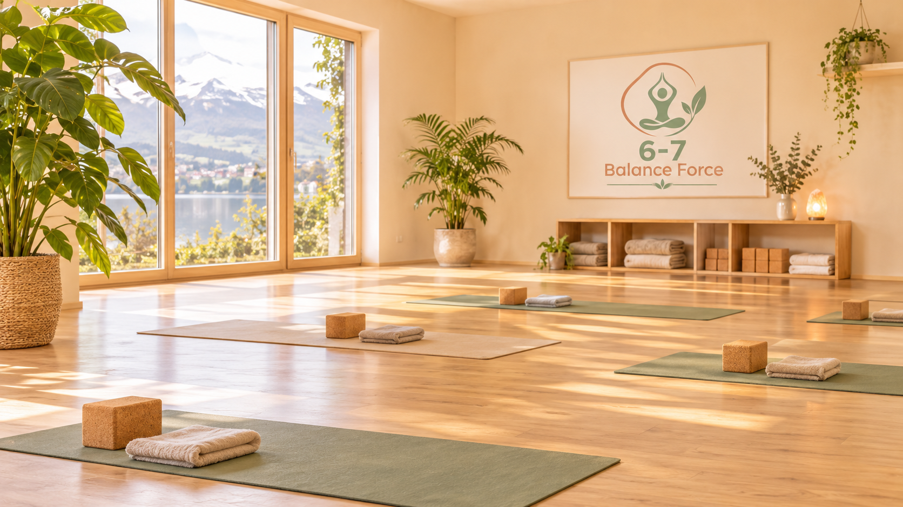

Über uns
Patrick M. weiss, wie sich Druck im Job anfühlt. Früher arbeitete er in einer Treuhandfirma, bis Stress und Rückenschmerzen ihn ausbremsten. In Indien lernte er bei einem Yogi, dass es beim Yoga nicht um Leistung geht, sondern um Atmung und Ruhe. Zurück in der Schweiz gründete er 6-7 Balance Force: einen Ort, an dem du nach der Arbeit, der Schule oder dem Lehrbetrieb abschalten und neue Energie tanken kannst.
Sein Motto: Wer langsamer wird, kommt weiter.
Philosophie

Leistungsdruck hast du im Alltag schon genug. Bei uns steht darum sanftes Yoga im Mittelpunkt: Bewegung, die gut tut, ohne anzustrengen.
- Du musst nicht beweglich sein, um zu starten.
- Niemand wird mit anderen verglichen.
- Ruhige Übungen statt Höchstleistung.
- Atemtechniken, die dir auch vor einer Prüfung oder einem wichtigen Meeting helfen.
- Jede Lektion endet mit einer kurzen Entspannung.
So findest du nach einem langen Tag zurück in deine Mitte.
Lektionen
Alle Lektionen finden am Abend statt, damit du sie gut mit Job oder Ausbildung verbinden kannst.
| Tag | Zeit | Lektion |
|---|---|---|
| Montag | 18:30–19:30 Uhr | Sanftes Hatha-Yoga |
| Mittwoch | 19:00–20:00 Uhr | Yoga für einen starken Rücken |
| Donnerstag | 18:00–19:00 Uhr | Atmung und Entspannung |
Kontakt
Lust auf eine Schnupperlektion? Schreib uns einfach eine E-Mail. Bring bequeme Kleidung mit, Matten haben wir vor Ort.
6-7 Balance Force
Musterstrasse 6, 4410 Liestal
Telefon: 061 000 06 07
E-Mail: hallo@balance-force.example